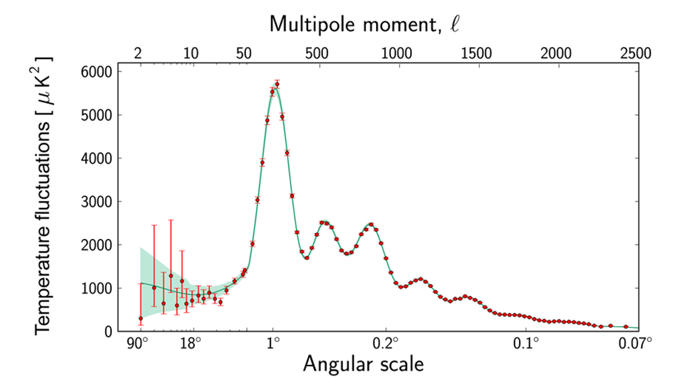

Since its discovery, the nature of dark matter has been a mystery. Despite being one of the most important parts of our universe, its concealed nature results in its incomprehensibility and the lateness of its discovery.
In 1933, Fritz Zwicky was studying Coma Cluster, collection of over 1000 galaxies. These are gravitationally bound together and orbit around collective centre of mass. When observing them, he noticed that some moved much faster than they should have, or was expected, for them to be able to stay in the cluster. At that speed, it would have been expected for them to be flung off the cluster.
He concluded that the Coma Cluster contained more gravity in clusters than expected. It was like they had more matter than he could see, helping pulling mass into the middle. It was from him, which the term 'Dark Matter' came from, or 'Dunkle Materie', because it didn't give off any light.
However, he wasn't able to fully prove the existence of dark matter, and there was too much uncertainty surrounding it, so the idea of it was dismissed and soon forgotten about.
Around 40 years later, Vera Rubin and Kent Ford were observing stars in Andromeda. Expecting stars further from the centre of mass to be moving in a slower orbit, they were surprised by the result.
The farther a planet is from a star, the slower it orbits. Measuring the movement within a solar system, the mass of the star can be found. Vera Rubin wanted to therefore try this to find the mass of a galaxy, using red-shift to note how the stars moved. However, she found the rotational velocity of the stars to be almost constant with some outer ones even being faster than those in the centre. Like Fritz Zwicky, she realised that this should not have been the case; at such high speeds, the other stars should have been coming off the galaxy. She then found that this was the case for other galaxies too.
Rubin therefore found that gravity is constant throughout a galaxy, even though the number of stars observed decreases as distance from the centre of mass increases. It was clear that there is more mass in the galaxy than visible. This invisible, or 'dark' matter must hold galaxies together in a sphere for gravity to be constant, explaining the idea of outer stars moving faster, to agree with our entire understanding of gravity.
By finding the speeds of stars in galaxies, Rubin estimated that there is around five times as much dark matter, than normal matter, in galaxies, and in the universe. Rubin's observations were more backed up and stronger, so she is the person described to have discover dark matter.
Even after this, some may have still been sceptical about matter that can exist without giving off light. In 2006, physicists observed the Bullet Cluster, the collision of two clusters of galaxies 3.8 billion light years away.
When the clusters collide, they mostly pass through each other, made mostly of empty space. They do contain gas though, which collides, causing it to heat up greatly and emit X-rays. When studying the collision, they expected, and found, that most of the mass (the interstellar gas) is in the middle. This can be seen in the image, which even shows how the collision shapes the gas (in red/pink).
The scientists examined the clusters through gravitational lensing: measuring where most of the mass of something is through looking at how much light is bent due to gravity. Performing this on the galaxies behind the cluster, which's light is distorted, they found that there is actually more mass either side of the gas, with the most mass present where the least is seen. The interstellar gasses collided in the middle, staying there, but the dark matter present in the clusters passed through. This is also found in other similar clusters. The presence of more matter than we can see, in this situation, and its behaviours here, supports other ideas about dark matter.
Cosmic microwave background radiation is the result of the stretching of high energy gamma rays so long after the Big Bang. The image above can be created showing the slight differences in temperature of the radiation in our universe. The differences are extremely small, but the existence of them are worth finding out about.
A graph of the CMBR image can be created depending on the number and sizes of the many areas of the same temperature. Although I find the graph difficult to understand, I can tell you that if there were no dark matter in the universe, the graph would look very different, with high peaks. As dark matter increases. The amplitudes of the even-numbered peaks decreases. In fact, to match the measurements of the values in the graph we have from the CMB, there must be around five times the amount of dark matter as normal matter. This agrees with the value Vera Rubin determined and supports the idea of dark matter affecting the motion of stars and galaxies.
As expected its very nature, the answer to the question of what dark matter is still escapes scientists. Scientists still do not know what dark matter is, though with many ideas of what it is not. They only know is that it exists, and does not interact with anything at all - including itself- except through gravity. It is not clouds of normal matter, as otherwise it would emit particles that can be detected. It is also not antimatter, as this reacts with normal matter. Dark matter is thought to can only be one of the theorised particles that have never been seen before. Below are only two possible explanations, from a longer list of many more.
WIMPS (Weakly Interacting Massive Particles):
The properties of dark matter matches those of WIMPs, being of a high mass and slow-moving. They also do not absorb or emit light, nor do they interact with any other particles that we know of. Much research is being performed to see if this is dark matter, but are yet to confirm anything.
Axions:
Axions are particles which have never been detected before, having mass while not really emitting radiation. Similarly, they don't interact with normal matter, so, like dark matter, are extremely difficult to observe, so physicists cannot easily learn much about them. While axions is a possibility, we - also - do not know for sure.
One of my favourite parts of science is the fact that ideas are still changing, and new things are being discovered across the world today. Dark matter is a fascinating example of this. It is difficult to understand how large structures, such as galaxies, could have formed at all without dark matter, with stars otherwise simply being scattered far apart. Dark matter is clearly a vital part of our universe, yet so elusive and mysterious.